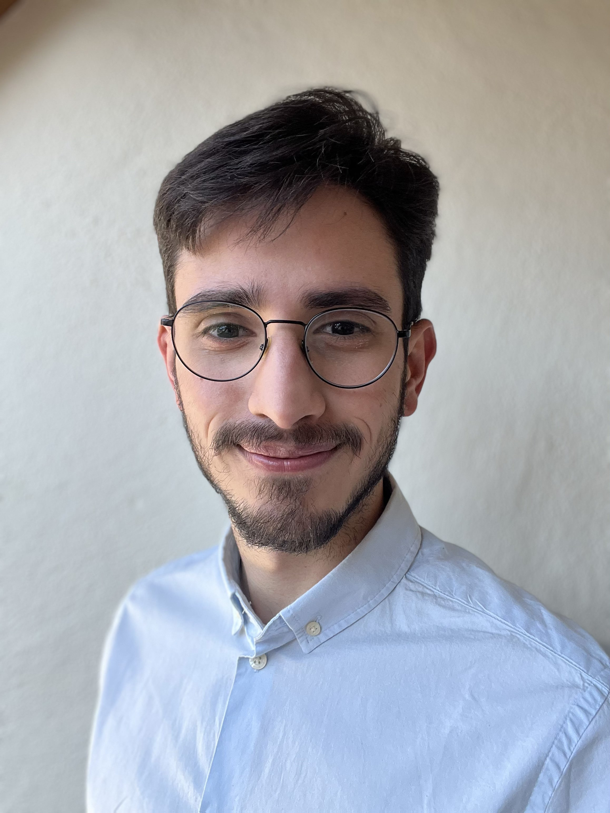

About Me
Engineering the bridge between Real-World and Simulation

Who I Am
Born in Brazil, my parents would always say I was a master pursuer of my dreams; I was fascinated from an early age by how things work. I spent countless hours reading, exploring technical subjects, and trying to understand the systems behind the world around me — a curiosity that naturally led me toward engineering.
Running after my dreams I moved to a larger city to focus on my studies and personal development. Around the same time, I discovered a passion for languages and taught myself German through books, news, and constant practice — a skill that would later play a major role in shaping my path toward Germany. In this new environment, I had the opportunity to learn from inspiring leaders and gradually develop my own leadership skills. I later became a small-group leader within my Christian community, an experience that strengthened my sense of responsibility, communication abilities, and capacity to support and guide people with different backgrounds and perspectives toward common goals. From a small town in Brazil's countryside to Munich Region in Germany, I was always pushed by challenges and driven by dreams, curiosity and persistence.Education
I hold a degree in Mechanical Engineering (Dipl.-Ing.) from the Federal University of Minas Gerais (UFMG), one of the best universities in Brazil. My academic journey was marked by a focus on numerical models, culminating in a thesis dedicated to developing Python-based tools for shaft analysis. During my studies, I had the opportunity to be part of a Formula Student team, reaching the finals in 2018 and 2019, and being recognized with the "Best Design" award in 2019.
Professional Profile
I'm a Software & Robotics Simulation Engineer with a background in mechanical engineering, specialising in dynamic systems modelling, numerical methods, and physics-based software development. My work focuses on translating physical system behaviour into reliable, structured code. My professional experience spans simulation tooling, nonlinear dynamic models, ODE-based analysis pipelines, and sensor-related software across roles within Aerospace, Automotive and Special Machinery industries in Germany and abroad.
Beyond Engineering
I enjoy exploring the outdoors through hiking, diving into classical literature and thrillers, and spending time with my lovely wife, traveling, seeing the world, and trying new cuisines.